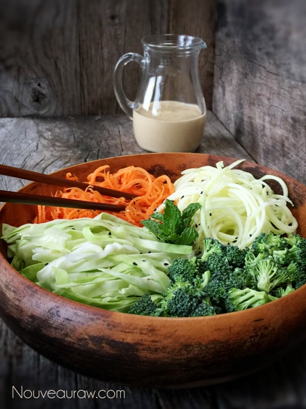
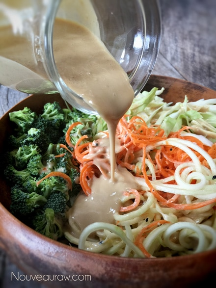

Tahini Vegetable Medley Salad

~ raw, vegan, gluten-free, nut-free ~
Yum! This salad is Middle Eastern-inspired. The sauce is amazingly addictive as well as gluten and dairy-free. You will want to lick the bowl clean! I suggest making a double batch of the sauce. Any leftovers of the sauce would make a wonderful salad dressing or a dipping sauce for veggies or some type of spring roll!
I made a double batch of this salad today thinking my husband could enjoy it as a side dish with tonight’s dinner and tomorrow’s lunch. He took one bite and ate the whole thing all by his lonesome! I take that as a compliment, and it brings me a huge smile. I hope you find this Tahini Vegetable Medley Salad as addictive as I have.
I should quickly note, if you don’t own a spiralizer you can simply use a potato peeler… peeling the zucchini and carrots down to the core. This will make “fettuccine-like” noodles. I do however recommend pampering yourself with a spiralizer; they are so much fun to use, especially for kids!
You can also be creative and make all sorts of veggie noodles. For inspiration, click (here).
Ingredients:
Serves 2-4
Salad base:
- 1/2 lb zucchini, spiralized (2 medium-sized)
- 2 carrots, peeled and spiralized
- 1/4 green cabbage head, shredded
- 1 1/2 cup broccoli, florets only
- sesame seeds and more mint, for garnish
Tahini Sauce:
- 1/2 cup raw tahini
- 1/4 cup Coconut Aminos / Tamari
- 6 Tbsp water
- 2 Tbsp maple syrup
- 2 Tbsp raw apple cider vinegar
- 1 1/2 tsp Sriracha Hot Chili Sauce
- 1/2 tsp roasted sesame oil
- 2 tsp stoneground mustard
- Pinch Himalayan pink salt
- Fresh Black Pepper
Preparation:
Salad base:
- Spiralize the zucchini and carrots. If not eating right away I suggest sprinkling the zucchini with salt. This will help to remove the water from the zucchini. Set aside as you prepare the remaining ingredients. If you plan on eating all of it right away, it’s fine to skip the salting process. If you don’t have a spiralizer, you can use a potato peeler and make long, thin noodles.
- Cut the cabbage into quarters, using your large chef’s knife remove the core from one of the quarters and discard it. Chop into small pieces. If you are going to make large batches of this, you could easily use your food processor to ease your chopping hand.
- Chop the broccoli into small florets. Did you know you can spiralize the broccoli stems?
- Toss all the veggies together.
Tahini Sauce:
- Stir or using your blender, mix together the Tahini, soy replacement, water, sweetener, vinegar, hot sauce, oil, mustard, salt, and pepper. Tasting to adjust seasoning if needed.
- When you’re ready to serve, add the sauce to the veggies tossing it with your hands, coating everything evenly.
- Garnish with mint and sesame seeds.
- Stored in a glass container in the fridge for up to 2-3 days.


© AmieSue.com